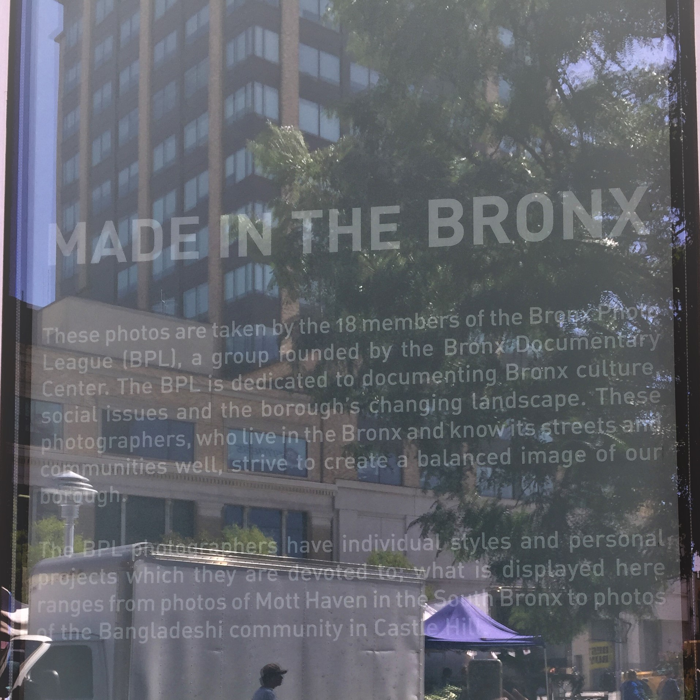

 Hello, my name is Tyrell Ethan Stokes. The Bronx is where I was born and raised, as an only child. Computer Network Technology is my major, at Borough of Manhattan Community College. I am also taking Web Design. Creating Fun and Informative Websites is what I enjoy and plan to do.
hobbies
Taking an idea and developing it into a beautiful vibrant Website is awesome! I love Designing webpages, especially about video games I have played. In my spare time, building computers is also what I like to do.
Quote of the Week
"We must welcome the future, remembering that soon it will be the past; and we must respect the past, remembering that it was once all that was humanly possible." - George Santayana
" Chloe " The Family DogMy plans this summer is to brush up on my photography skills. Maybe I'll check out some.local N.Y. places that I haven't been to in a while.
I Wanted To Be With Them!
My high school days was a challenge. I hated high school with a passion. As soon as I entered the ninth grade, I was counting down the days until graduation. By the time I got to the tenth grade, I was ready to drop out! I stood up to my mother and told her that I was not going back. High school was a waste of my time. High School was the Government's Education, that is being forced on kids, who don’t want it. Also, I will no longer aim for "A's." "A" stands for Aneurism, that you get from studying. It didn't matter whether one kid get an "A" and the other get a "D" both kids will graduate, I said. My new goal was to strive for "Ds" and make my life easier. It was all planned out perfectly. I was going down to Wall Street.
I wanted to be with them, and sleep in the tents with college students who were already down there fighting for the "Cause." The college students were protesting against the government. The Occupy Wall Street Movement was the hottest thing and at fifteen I wanted to join them. Of course, I slept with one eye opened that night because mom did not say a word! The next day I got up and went to school realizing that at fifteen nobody was going to let me sleep in tents on the streets of Manhattan. Also, I remembered that my friends and I had an appointment to play Call of Duty online after school and it was Papa John Friday. What did you expect, "Gimme a Break," after all I was a MINOR! Graduation was one of the best days of my life. It meant no more school. That I had survived and completed the Government's Education and was proud! LOL. Just Another N.Y. Moment. Thanks for Visiting. - Tyrell E. Stokes

 Taking an idea and developing it into a beautiful vibrant Website is awesome! I love Designing webpages, especially about video games I have played. In my spare time, building computers is also what I like to do.
Taking an idea and developing it into a beautiful vibrant Website is awesome! I love Designing webpages, especially about video games I have played. In my spare time, building computers is also what I like to do.